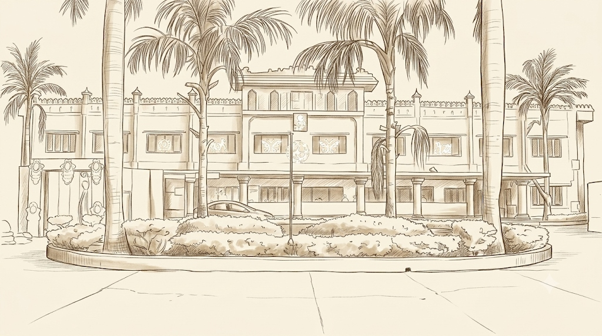
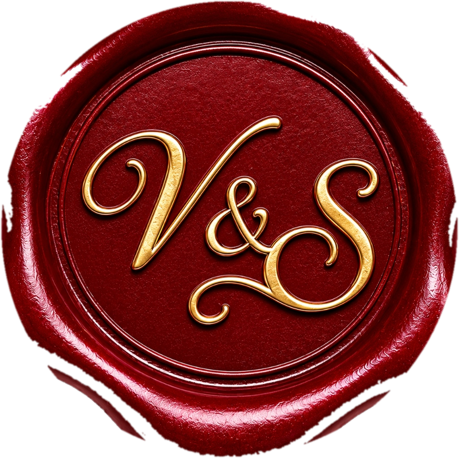

Wedding Invitation
SRINITHI K & VISHU KARTHICK P
Two Souls, One Destiny
13 DECEMBER 2026
Two Souls, One Destiny
Dear Family & Friends
Join us for an evening and morning of love, laughter, warm blessings, and unforgettable memories as we begin our forever.
Counting Down to Forever
00
Days
:
00
Hours
:
00
Mins
:
00
Secs
Schedule of Events


Day One
Saturday – 12 December 2026
8:40 AM
Groom's Welcome
A grand traditional welcome honoring the groom, his family, and loved ones.
11:45 AM – 12:55 PM
Engagement Ceremony
The formal exchange of sacred rings and promises in the presence of family and elders.
6:00 PM
Wedding Reception
An evening of felicitation, joyous celebrations, music, and celebratory dinner.
Day Two · Auspicious Wedding Day
Sunday – 13 December 2026
4:45 AM – 5:45 AM
Upanayanam
The sacred thread ceremony marking divine spiritual initiation and blessings.
7:00 AM – 8:18 AM
Shubha Muhurtham
The divine auspicious hour of Mangalya Dharanam and Saptapadi uniting Srinithi & Vishu Karthick in sacred matrimony.
Captured Moments
A Journey of Two Hearts

"Every journey begins with a heartbeat, every forever with a smile."
Srinithi & Vishu Karthick

Poovayammal Thirumana Mandapam
F56R+MX3, New Bus Stand Rd, V.Nagar,
Rasipuram, Tamil Nadu 637408
📍 Open in Google Maps
Rasipuram, Tamil Nadu 637408
Hope to see you there!
Your presence and blessings are our greatest gifts as we embark on this sacred journey together.
